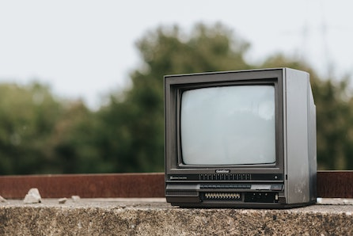

It seems impossible to imagine a world without technology; after all, we have come a long way and advanced technologically since the beginning of time. Everywhere people look, they find smartphones, computers, tablets, flatscreen TVs, digital music — the list goes on. Having been surrounded by technology since a young age, I never took a moment to stop and think about my relationship with it. Personally, technology was nothing more than a form of entertainment for me. However, this particular use of electronic devices such as computers and laptops soon changed to help with productivity. While my experience with technology evolved into something different in some ways, one fact still remains: my reliance on it never faded away.
My earliest memory of using digital technologies goes way back to when I was in preschool. Every day when my dad dropped me off at the entrance of the building, I would give him a quick hug before running past the bookshelves and plastic toy bins to play games on the computers. While I only vaguely recall the kind of games the computers had loaded onto them, I believe my favorite one had to do with cooking. One part of the game included a refrigerator where the player could choose which ingredients to cook. At the end, a rabbit character would appear and eat whatever dish was prepared.
Thinking back on this early personal experience with technology makes me feel incredibly nostalgic and remember all the other older forms of digital technology. Although today’s technology is far more advanced and diverse than it was back then, I still miss the old box TVs, computer games, iPod Nanos, Game Boys, Game Cubes, and Playstations that were considered cool. I can vividly recall my younger self playing solitaire and pinball on my family’s PC in the basement after begging my parents. I was not great at playing solitaire, but the undo button became my best friend as I used it constantly until I was able to see the decks of cards bounce across the screen as colored fireworks indicated my victory.
Looking in the past, I like to believe that my relationship with technology has changed or matured for the better, yet another part of me disagrees with this statement. It is definitely true that I have grown out of playing computer games, using gaming gadgets, and surprisingly — watching TV, but I still find myself surrounded by digital technology for different purposes. For one thing, school work now requires the use of some form of technology, such as a computer or laptop to access online websites and assignments. And with the ongoing pandemic, I was surrounded by digital technology to the point where I grew tired of it. Whether it was attending online classes through Zoom, using applications like Google Docs or Visual Studio Code for assignments, or using my phone for an additional three hours a day out of pure boredom, my life during this period of time was never short on technology. To this day, I still find myself looking down at my phone for unnecessary amounts of time. Aside from using my phone for well-deserved downtime, I sometimes notice myself mindlessly scrolling through social media posts on platforms like Instagram, Twitter, and TikTok; it seems as if I feel obliged to constantly be on my phone or using some sort of technology to keep myself busy. In fact, if I was to compare the time I currently spend using digital technology versus back then, it would probably be greater today.
Although my use of digital technology can be a little excessive at times, I still believe that being technologically literate and knowing how to use various forms of technology is important and necessary in the contemporary world. Not only does technology provide convenience through quick and easy access to information, but it helps individuals stay connected by providing a mode of communication. Whether it is emails, text messages, or video calls, people are only one touch away from contacting a friend, family, or coworker. In addition, technology can provide people with different sets of skills, such as navigating computers, coding software, creating digital content, and so much more. Ultimately, the world we live in today would not be what it is without the use of digital technology.
...
Thank you for taking the time to read about my experience with technology. If you'd like to get in touch with me, feel free to send me an email at rebylee@umass.edu; I'd love to hear from you!